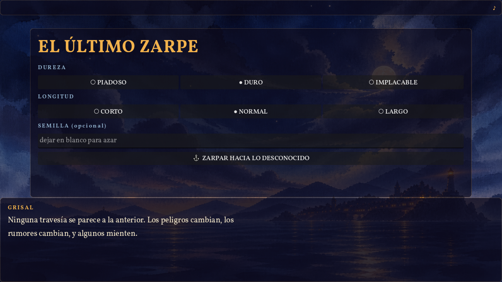
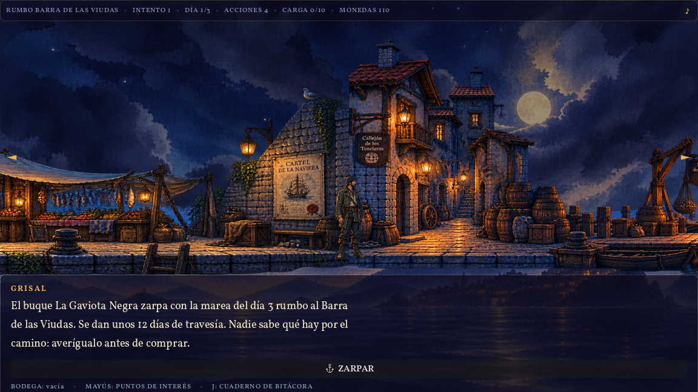
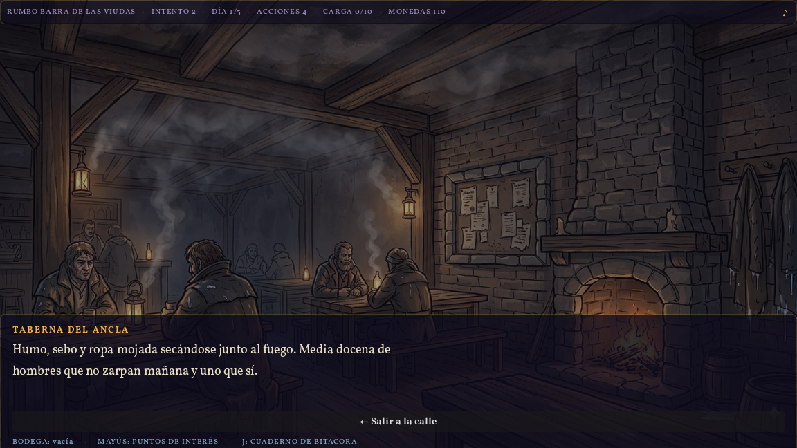
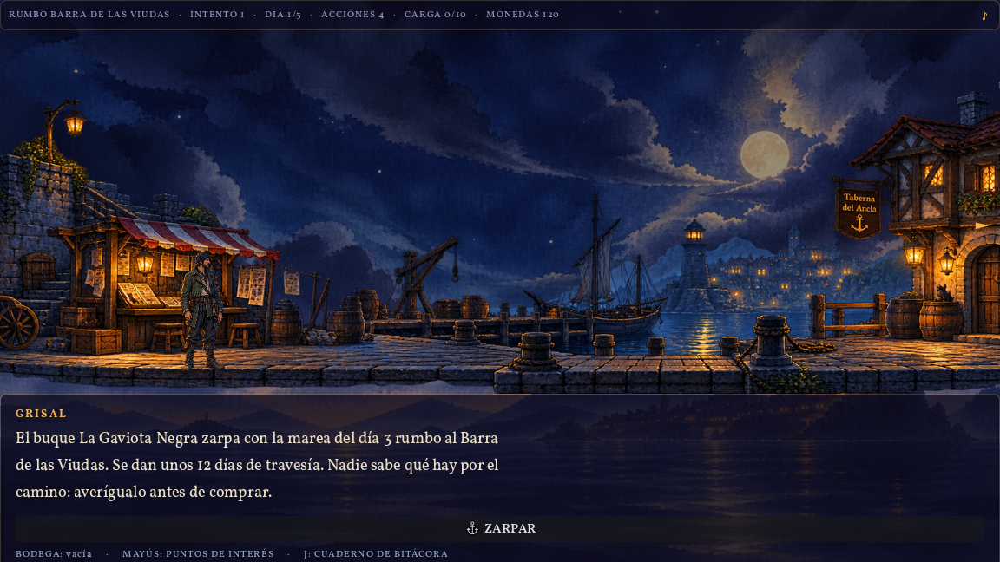
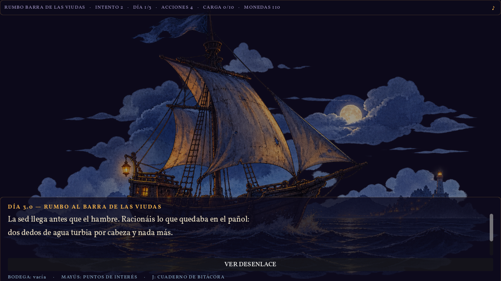

Un roguelike de preparación donde lo único que sobrevive al bucle es lo que has entendido.
El roguelike moderno enseña al jugador a memorizar builds. Repites hasta que la combinación correcta se te queda grabada, y la muerte se convierte en un peaje administrativo: pierdes una partida, ganas monedas permanentes, vuelves más fuerte. La dificultad no la resuelve el jugador; la erosiona el desbloqueo.
Quería un juego que hiciera lo contrario: que la única cosa que se acumulara entre partidas fuera comprensión. Sin monedas persistentes, sin árbol de mejoras, sin meta-progresión. Si el segundo intento va mejor, tiene que ser porque el jugador sabe algo que antes no sabía.
Eso obliga a una premisa muy concreta, y de ahí sale El Último Zarpe: un puerto llamado Grisal, unos días contados, un barco que zarpa con o sin ti, y una travesía cuyos peligros son desconocidos. Preparas el viaje con dinero limitado, información contradictoria y una bodega que no da para todo. Normalmente mueres. Lo que aprendes al morir es todo lo que te llevas.

Un juego que mata al jugador constantemente tiene un margen de error muy estrecho. Si una muerte se siente arbitraria, el jugador no aprende: se va. Así que la primera decisión de diseño no fue de contenido sino de contrato:
Nunca mentir al jugador sobre las reglas; sí sobre los hechos.
Las pistas pueden ser falsas, los personajes pueden tener intereses propios y la gente miente en la taberna. Pero el sistema es justo. Y «justo» aquí no es una promesa de intenciones: cada viaje generado se demuestra soluble antes de dejarte empezar. Un verificador prueba por fuerza bruta que existe al menos una combinación de compras que sobrevive, con margen económico. Si no la encuentra, ese viaje no llega al jugador. La dificultad nunca es una tirada injusta; es información que no fuiste a buscar.
La decisión más contraintuitiva del proyecto: «volver a Grisal» repite la misma semilla a propósito. La tentación de un roguelike es dar una partida nueva tras cada muerte. Pero eso convierte el fracaso en ruido: si el próximo viaje es otro, lo que aprendiste sobre este no vale nada.
Repitiendo la semilla, el segundo intento es el mismo enemigo con más luz. El jugador vuelve al puerto sabiendo que el agua se acaba el día 3, y esta vez gasta sus preguntas en otra cosa. Ese es el juego.
Antes de tocar Godot construí el juego entero como una página HTML con SVG y JS —jugable de principio a fin— para poder discutir el diseño jugándolo en vez de imaginándolo. Cuando la mecánica quedó clara, ese prototipo pasó a ser algo más útil que documentación: la especificación ejecutable del port. El motor de Godot no se consideró correcto hasta que generaba exactamente el mismo viaje que el prototipo para la misma semilla, en 405 de 405 combinaciones de semilla × dificultad × longitud.
Tras el port, una medición incómoda: en modo largo solo existían 6 puzzles posibles. Tres parámetros de dificultad no hacían nada en absoluto. El juego que en teoría era infinitamente rejugable era, en la práctica, memorizable en una tarde.
La respuesta fue ampliar el repertorio (de 6 a 12 peligros, de 13 a 18 objetos — de 6 puzzles posibles a 792 en modo largo) y, sobre todo, sacar las reglas del código y meterlas en datos. Hoy la dificultad vive en un JSON: cuánto tapa un objeto de calma, cuántas pistas falsas hay, cuál es el margen económico mínimo. Se tunea entre partidas de playtest sin recompilar.
El puerto tiene once lugares. No abren todos cada partida: la misma semilla que genera el viaje sortea cuáles están abiertos hoy. La ruta óptima deja de ser memorizable — tienes que decidir a quién preguntar con lo que hay abierto.
Dos salvaguardas evitan que la rotación degenere en frustración. Hay un suelo de información: si el sorteo deja el puerto demasiado pobre, se abren lugares extra hasta garantizar un mínimo de fuentes. Y una regla más dura, aprendida a base de romperla: lo que apaga una mecánica no rota. Al principio el callejón —donde vive el único informador capaz de señalar que una pista es falsa— entraba en el sorteo. Medido: en un 44 % de las partidas el jugador perdía la capacidad de detectar mentiras sin que nada se lo dijera. Exactamente el tipo de dificultad que el juego no busca, porque no se puede aprender de ella. El callejón, el mercado y el muelle abren siempre. Costó variedad (de 126 mapas posibles a 56) y valió la pena.
Grisal es un panorama lateral con parallax por el que caminas. Los sitios donde puedes preguntar son objetos del mundo dibujado —un cartel, una puerta, una pizarra—, no entradas de una lista. Los menús reales se reservan para los dos sitios donde el jugador espera un menú: el mercado y la contrata de tripulación.

El recurso escaso no es el dinero: son las acciones del día. Cada fuente que consultas gasta una, y a veces también monedas. Cuando se agotan, el día avanza y el barco está un día más cerca de zarpar. Por eso todo lo que cuesta acciones es una decisión de verdad, y lo que solo cuesta dinero casi nunca lo es.
El reverso de esa regla: consultar lo que ya sabes no cuesta nada. El cuaderno de bitácora, los apuntes y la bodega se miran gratis, siempre. El jugador no debe pagar por recordar.

Las pistas vienen de gente con motivos distintos y fiabilidad distinta: el periódico está sesgado, la taberna exagera, el maestro de ribera es caro pero técnico, los exvotos de la capilla cuentan miedos y no observaciones, el registro del hospital sí sabe qué mata a bordo. Algunas pistas son directamente falsas. La regla de diseño es que ninguna fuente sola da la verdad: hay que cruzar dos como mínimo antes de gastarse el dinero.

No hay barra de vida. La travesía se juega sola, encadenando lo que preparaste —o lo que no— en una cascada de fallos: la sed llega antes que el hambre, racionas agua turbia, la tripulación se tensa, y para cuando llega la bruma ya no quedan manos sanas. Lo que llevas es lo que tienes. Cuando termina, la bitácora anota qué te mató, en qué día y con qué en la bodega.

El juego es jugable de principio a fin y se distribuye como ejecutable autocontenido de Windows, verificado en un directorio limpio. Sobre lo que se puede medir hoy — todo es de sistema, no de jugadores:
Aún no hay jugadores. Ni playtests externos, ni métricas de retención, ni tienda, ni fecha. Cualquier cifra de arriba habla de la solidez del sistema, no de que a alguien le haya gustado. Ese es el siguiente paso, no un resultado ya conseguido.
Medir la variedad antes de creértela. El juego «infinitamente rejugable» tenía seis puzzles. No lo detectó una intuición de diseño: lo detectó contar. Si un sistema generativo no se instrumenta, se asume que funciona porque es generativo.
La dificultad tiene que poder aprenderse. El caso del callejón es el que más me enseñó: no era un bug ni un desequilibrio de números, era una mecánica que se apagaba en silencio en casi la mitad de las partidas. El jugador habría notado que iba peor sin poder saber por qué. De ahí salió la regla que ahora gobierna cualquier ampliación: lo que rota son voces, nunca mecánicas.
Un prototipo jugable vale más como oráculo que como documento. Escribir el juego dos veces —primero en HTML para jugarlo, después en el motor— parece duplicar trabajo. Lo que dio fue una definición de «correcto» que no admite opinión: mismo resultado para la misma semilla, o el port está mal.
Lo que falta, y lo sé. Los días de preparación siguen siendo decorativos: no filtran qué peligros pueden salir, y hacerlo importar es el cambio con más recorrido pendiente. El agua es obligatoria siempre, así que una de las decisiones de compra no es tal decisión. Y casi nunca queda un peligro sin ninguna pista honesta en el mapa, lo que significa que el jugador rara vez tiene que apostar bajo incertidumbre — que es justo lo que daría sentido pleno a la bitácora entre bucles.